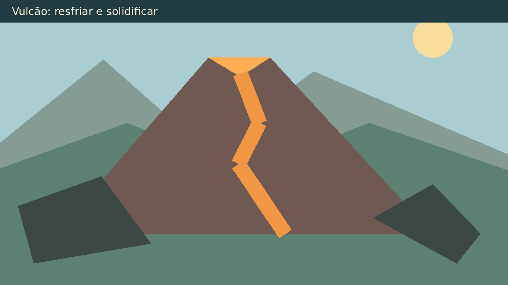

Lava e basalto
A lava está na superfície. Quando perde calor e solidifica, pode formar basalto. A cena ilustra o processo: não é uma fotografia de um vulcão real.

Lava e basaltoO tempo dos cristaisIr para RioResolver as investigaçõesApoio de leitura diretoMagma é material rochoso fundido no interior da Terra. Quando chega à superfície, recebe o nome de lava. Ao perder calor e solidificar, esse material forma rochas ígneas, também chamadas magmáticas. O processo que explica esse grupo é o resfriamento e a solidificação, não o acúmulo de areia. O granito costuma apresentar cristais visíveis porque o magma esfria lentamente em profundidade, dando tempo para os cristais crescerem. O basalto costuma ter grãos muito pequenos porque a lava esfria mais rapidamente na superfície. É uma comparação didática: aparência isolada não substitui a investigação completa da amostra.
A lava está na superfície. Quando perde calor e solidifica, pode formar basalto. A cena ilustra o processo: não é uma fotografia de um vulcão real.
O granito costuma ter cristais visíveis e se forma pelo resfriamento mais lento de magma em profundidade. O basalto geralmente apresenta grãos muito pequenos.
Selecione para avançar à próxima cena.
Abrir cena →Use as evidências das cenas no percurso principal ou em Aprender de outro jeito. O resultado fica no percurso de atividades, separado desta exploração.
Abrir percurso →Acesso direto ao apoio com imagens, áudio, letras, palavras e frases. Não é preciso caminhar nem controlar um personagem.
Abrir percurso →Imagem: Ilustração didática autoral da produção pedagógica do Prof. André · CC BY 4.0 · illustration